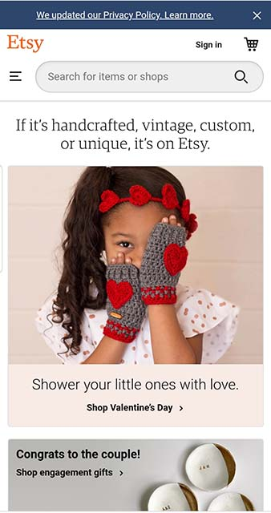
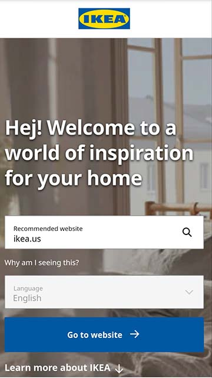

Proximity
Etsy Etsy's example of good proximity starts from the top of the page. Everything that a user may need to navigate through the items & shops is grouped together (example: login, menu, search bar, and shopping cart). Scrolling down the page, they have things clearly categorized by upcoming holidays, gifts, shipping, help, reviews etc. The use of proximity on the site makes it easy for the user to find what they need.
White space
Shop DisneyThe Disney Store does a good job at using white space to create a user friendly experience for online shoppers. Because of the number of products and vibrant colors used in those products and advertising, the site has a risk of looking very busy. However, Disney alternates between colorful images and product placement surrounded by wide open space. It gives the eye a place to rest and doesn't clutter up site.
Contrast
Ikea Ikea uses contrast on their site in a very simple but effective way. They use white on dark colors and black, blue and yellow on a white background. They keep a simple, clean color pallette that has high contrast. They also effectivly use contrast in the size of their typography. As a user, it's very easy to read the different sections of the website.